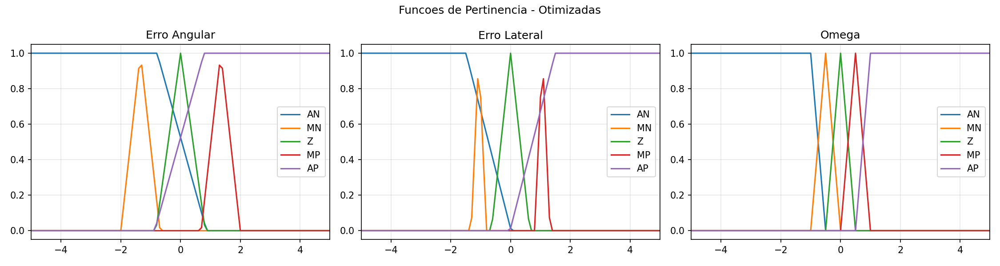
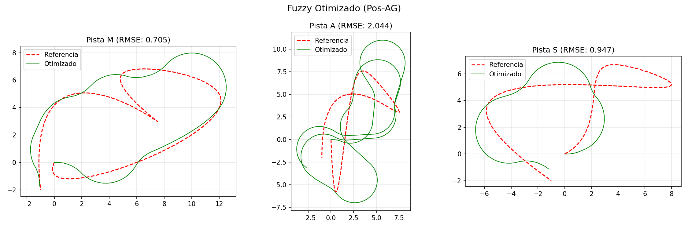
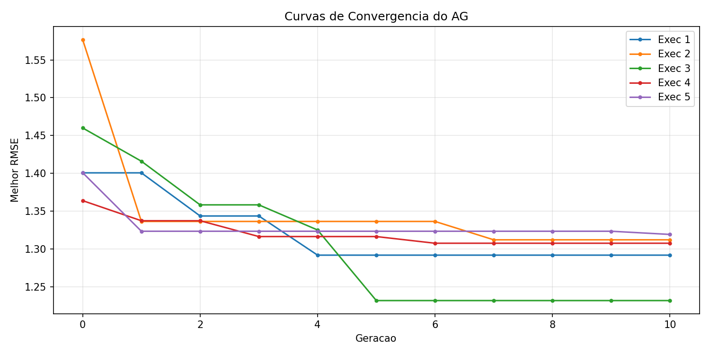

Controle Fuzzy Mamdani Otimizado por Algoritmo Genético para Rastreamento de Trajetória de Robô Autônomo
Reprodução (A1) de Mancilla et al., Symmetry 2022, 14, 202 — com extensão de otimização por AG
Inteligência Artificial e Computacional (0700M8) — CESUPA · Prof. Daniel Leal Souza
Turma: CC5MA · Equipe (5 integrantes): Brenda Nascimento, Cauê Jadão, Augusto Pereira, Fernando Mourão, César Ribeiro
Trilha de ampliação (equipe de 5): Comparação de modelos — Mamdani × TSK experimental (+ baseline × otimizado)
github.com/brenda24070071-dotcom/fuzzy-ag-path-tracking-cesupa
O problema: rastreamento de trajetória
- Robô autônomo (cinemática de bicicleta, L = 2,5 m, v = 3,33 m/s) deve seguir uma pista de referência com o menor desvio possível;
- Controlador decide a taxa de guinada ω a partir de dois erros medidos;
- Aplicações: veículos autônomos, AGVs, máquinas agrícolas.
Por que lógica fuzzy?
- Conhecimento de condução é linguístico: "um pouco à direita → vire de leve à esquerda";
- Fronteiras entre situações são graduais, não nítidas;
- Tolerância a imprecisão de modelo — sem exigir solução analítica exata.
Variáveis do controlador
| Variável | Papel | Unidade | Sinal positivo = |
|---|
e_lat | entrada | m | robô à direita da pista |
theta_e | entrada | rad | apontando à esquerda |
omega | saída | rad/s | guinada à esquerda |
5 termos linguísticos por variável: AN, MN, Z, MP, AP
Universo de discurso: [−50, 50]; região fina de operação: [−5, 5].
Artigo de referência e levantamento bibliográfico
Artigo principal: Mancilla, García-Valdez, Castillo & Merelo-Guervós (2022). Optimal Fuzzy
Controller Design for Autonomous Robot Path Tracking Using Population-Based Metaheuristics.
Symmetry 14(2), 202. DOI 10.3390/sym14020202
- Bases consultadas: Google Scholar, IEEE Xplore, MDPI, ScienceDirect/SpringerLink;
- Palavras-chave: "fuzzy logic controller" + "path tracking"; "fuzzy controller" + "genetic algorithm"; "genetic fuzzy systems";
- Inclusão: revisão por pares, estrutura fuzzy descrita (reprodutível), aplicação em robótica móvel ou fundamento; Exclusão: sem detalhe do modelo, fora de escopo (tipo-2, deep learning), sem acesso;
- 7 trabalhos relacionados tabelados (Mamdani 1975; Takagi-Sugeno 1985; Zadeh 1965; Antonelli et al. 2007; Cordón et al. 2001; Precup & Hellendoorn 2011) — ver
docs/trabalhos_relacionados.md.
Por que este artigo? Reprodutível (modelo + pistas + controlador + fitness descritos),
recente e de acesso aberto, e une controle fuzzy + computação evolutiva — as duas frentes da disciplina.
Metodologia: simulação e função objetivo
Modelo cinemático (Euler, Δt = 0,1 s)
x⁺ = x + v·cosθ·Δt
y⁺ = y + v·sinθ·Δt
θ⁺ = θ + (v/L)·tanδ·Δt, δ = arctan(L·ω/v), |δ| ≤ 45°
Pistas de referência
- 3 pistas (M, A, S) por spline cúbica sobre pontos de controle do artigo;
- Ponto mais próximo via k-d tree → erros
e_lat (produto vetorial) e theta_e (normalizado em [−π, π]).
Função objetivo (fitness)
- RMSE do erro lateral, média nas 3 pistas;
- Término: chegada ao fim da pista (raio 2 m) ou TMAX = 50 s;
- Penalidades: +2000 se não completa o percurso; 5000 se a inferência falha;
- → a penalidade força o AG a só refinar controladores válidos.
Modelagem fuzzy: funções de pertinência
- Triangulares no centro (Z, MN, MP) e trapezoidais nas pontas (AN, AP — ombros até ±50 garantem cobertura);
- MFs das entradas: parametrizadas por 10 genes p ∈ [0,1]¹⁰ (larguras, centros e rampas);
- MFs da saída: fixas — preserva o significado físico da ação e reduz o espaço de busca;
- Limites dos genes impedem degeneração (sem colapso de suporte nem sobreposição total).
Fórmulas e tabelas completas: docs/funcoes_de_pertinencia.md

MFs após otimização pelo AG (erro angular, erro lateral e saída ω)
Base de regras: 25 regras (5×5), antissimétrica
| theta_e \ e_lat | AN (muito à esq.) | MN | Z | MP | AP (muito à dir.) |
|---|
| AN (apont. muito à dir.) | Z | MP | AP | AP | AP |
| MN | Z | MP | MP | MP | MP |
| Z (alinhado) | AN | Z | Z | Z | AP |
| MP | MN | MN | MN | MN | Z |
| AP (apont. muito à esq.) | AN | AN | AN | MN | Z |
- Correção de rumo: alinhado em posição, erro angular → ação oposta ao erro;
- Retorno à pista: alinhado mas afastado → guinada forte em direção à pista;
- Zona morta: desvios pequenos não geram ação (evita chattering);
- Convergência: afastado mas já apontando de volta → ω = Z (evita sobressinal);
- Conflito: afastado e apontando para fora → correção máxima;
- Estrutura antissimétrica = simetria física do problema.
Inferência Mamdani e implementação
Pipeline de inferência
- Fuzzificação: singleton nas duas entradas;
- Operador E: mínimo (t-norma);
- Implicação: mínimo (trunca o consequente);
- Agregação: máximo sobre as 25 regras;
- Defuzzificação: centroide do conjunto agregado.
Arquitetura do código
FastFuzzyController: motor Mamdani em NumPy (~1500× mais rápido) — usado no laço do AG;build_fuzzy: mesmo sistema em scikit-fuzzy — cenários, superfície e gráficos (validação cruzada);- AG real-coded: torneio k=3, cruzamento aritmético (0,7), mutação gaussiana (0,3; σ=0,2), elitismo 2;
- 5 execuções independentes, sementes 42–46 → reprodutível.
Cenários de teste (valores reais do sistema)
| Caso | e_lat | theta_e | ω baseline | ω otimizado | Interpretação |
|---|
| Nulo | 0 | 0 | 0,000 | 0,000 | equilíbrio exato ✔ |
| Lateral alto (dir.) | +5 | 0 | +17,279 | +17,032 | vira à esquerda, de volta à pista ✔ |
| Lateral alto (esq.) | −5 | 0 | −17,279 | −17,032 | antissimétrico ✔ |
| Angular alto | 0 | +2 | −17,279 | −17,271 | corrige o rumo ✔ |
| Aproximação (fronteiriço) | +5 | +2 | 0,000 | 0,000 | já convergindo → não interfere ✔ |
| Conflito crítico | −5 | +2 | −17,279 | −17,279 | divergindo → ação máxima ✔ |
|ω| = 17,3 corresponde ao centroide dos conjuntos AN/AP; na prática satura o esterçamento em ±45°.
Tabela completa com análise de coerência: docs/cenarios_de_teste.md.
Resultados: rastreamento e efeito do AG
| Pista | RMSE base (m) | RMSE otim. (m) | Δ |
|---|
| M | 0,802 | 0,705 | −12% |
| A | 2,231 | 2,044 | −8% |
| S | 1,647 | 0,947 | −42% |
| Média | 1,560 | 1,232 | −21,0% |
- Robô completa as 3 pistas nos dois casos;
- 5 execuções do AG convergem para 1,23–1,32 m → robustez à semente.


Análise crítica (1): defeito encontrado e corrigido
Versão inicial: matriz de regras espelhada no eixo do erro lateral em relação à convenção
de sinal do simulador → realimentação lateral positiva: o robô seguia a pista por alguns metros e
divergia (RMSE ≈ 2085 m, com penalidade). Segundo problema: sem critério de chegada, o robô
completava a pista em ~14 s e vagava até os 50 s, disparando a penalidade mesmo rastreando bem.
Correções validadas: espelhamento das colunas da matriz + detecção de chegada.
RMSE baseline: 2085 → 1,56 m; melhoria do AG: 0,5% → 21,0%.
- Lição 1: convenções de sinal são parte da modelagem fuzzy — documentamos todas (
docs/base_de_regras.md);
- Lição 2: validação de malha fechada é indispensável: cenários pontuais isolados não revelavam o problema;
- Lição 3: a penalidade de não-chegada na fitness detecta corretamente controladores inválidos.
Análise crítica (2): limites, sensibilidade e Mamdani × TSK
Onde funciona bem / onde sofre
- Retas e curvas suaves: erro < 1 m, captura sem oscilação;
- Curvas fechadas: laços de recaptura (v fixa, sem antecipação de curvatura) — pior caso: pista A;
Parâmetros sensíveis
- Zona morta lateral: estreita → chattering; larga → erro de regime;
- Ombro AN/AP angular: AG o reduziu (1,25→0,79) e compensou alargando a zona morta angular (0,5→0,83).
Mamdani × TSK (experimental — trilha de ampliação)
- TSK ordem zero: mesmas regras, consequentes constantes, média ponderada;
- Baseline: TSK melhor (1,43 × 1,56 m) — saída mais suave;
- Parâmetros otimizados p/ Mamdani: TSK falha a chegada na pista A → o ajuste do AG é específico do motor (co-adaptação);
- Mamdani: saída linguística → base auditável.
Melhorias futuras
- 3ª entrada: curvatura da pista (antecipação); velocidade variável;
- Otimizar MFs de saída; comparar AG × PSO × Mamdani × TSK.
Conclusão, IA e referências
- Reprodução mínima viável funcional e reprodutível do controlador de Mancilla et al. (2022): Mamdani 5×5, 25 regras, centroide;
- AG real-coded reduziu o RMSE médio de 1,56 m → 1,23 m (−21%) ajustando só as MFs de entrada;
- Ciclo completo: modelagem justificada → implementação → validação experimental → análise crítica honesta.
Uso de IA (declarado)
Claude Code (Anthropic): esboço de código, revisão/depuração (identificou os 2 defeitos, validados pela equipe por simulação) e rascunhos de documentação. Tudo revisado, executado e validado pelos integrantes — docs/declaracao_uso_ia.md.
Referências principais
[1] Mancilla et al., Symmetry 14(2):202, 2022 · [2] Antonelli et al., IEEE TFS 15(2), 2007 · [3] Mamdani & Assilian, IJMMS 7(1), 1975 · [4] Takagi & Sugeno, IEEE SMC-15(1), 1985 · [5] Cordón et al., Genetic Fuzzy Systems, 2001 · [6] Precup & Hellendoorn, Comput. Ind. 62(3), 2011 · [7] Zadeh, Inf. & Control 8(3), 1965
github.com/brenda24070071-dotcom/fuzzy-ag-path-tracking-cesupa — Obrigado!